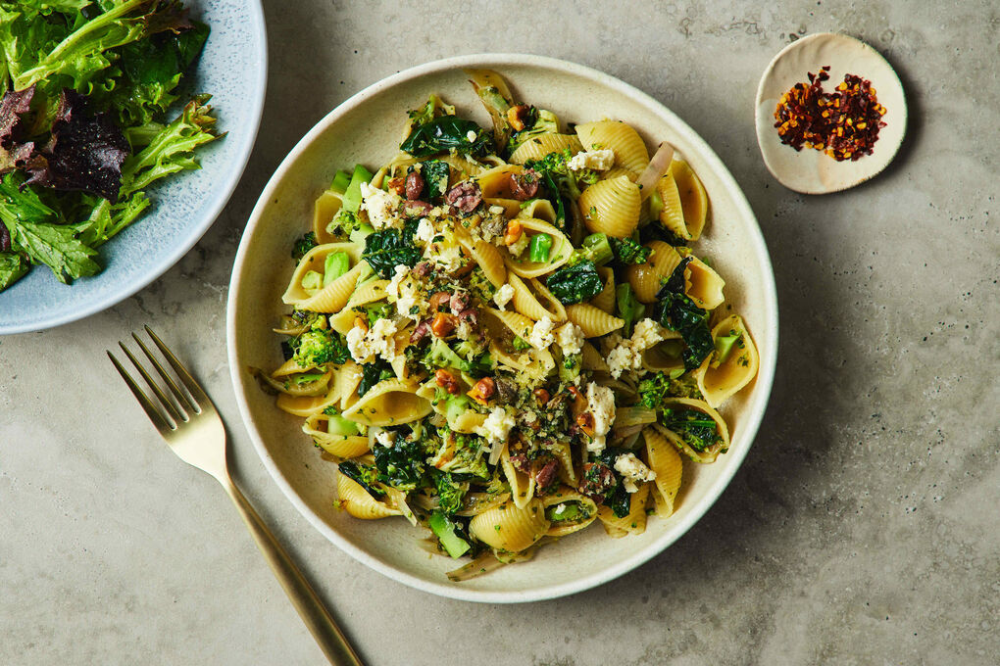

Figure 1. Broccoli Pasta Shells Dish
Description
Ingredients
- 1 head of broccoli
- 1 garlic clove, unpeeled
- 2 tbsp olive oil
- 250g pasta shells
- 1/2 small pack parsley
- 1/2 small pack basil
- 30g toasted pine nuts
- 1/2 lemon, zested and juiced
- 30g parmesan
Preparation
- Heat the oven to 200C/180C fan/gas 6..
- Toss the broccoli and garlic in 1 tbsp of the olive oil on a roasting tray and roast in the oven for 10-12 mins, until softened.
- Tip the pasta shells into a pan of boiling, salted water.
- Cook according to packet instructions and drain.
- Tip the parsley, basil, pine nuts, lemon juice and parmesan into a blender.
- Once the broccoli is done, set aside a few of the smaller pieces.
- Squeeze the garlic from its skin, add to the blender along with the rest of the broccoli, pulse to a pesto and season well.
- Toss the pasta with the pesto.
- Add the reserved broccoli florets, split between two bowls and top with a little extra parmesan, the lemon zest and a good grinding of black pepper.